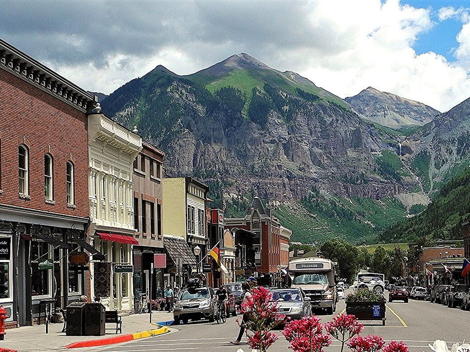

Mountain Village · Luxury
Madeline Hotel & Residences
An Auberge resort at the gondola plaza with ski-in access and a spa.
Official details for Madeline Hotel & ResidencesA box-canyon mining town at the end of a mesa-top runway.
Telluride sits at the end of a narrow box canyon in the San Juan Mountains, its Victorian main street hemmed in by 13,000-foot peaks and Colorado’s tallest free-falling waterfall. Land on the mesa-top runway at Telluride Regional, five miles west, ride the free gondola from town over the ridge to Mountain Village, have lunch at Allred’s at the top, and walk Colorado Avenue in the evening. Summer brings the Bluegrass and Film festivals; winter brings some of the best skiing in the West.

Time illustration: direct distance at 150 KTAS plus 15 minutes for departure and arrival, matching the discovery page. Use ForeFlight for your actual flight plan.
KTEX, Telluride Regional, is a non-towered airport at 9,070 feet with a single 7,111-foot runway on a mesa above the San Miguel River, about 10 minutes from town.
Telluride Regional Airport, Telluride, CO
One of the most demanding airports in the country: rising terrain in all quadrants, a humped runway, noise-abatement procedures (land Runway 9, depart Runway 27 when you can), and the airport is closed from 9 p.m. to 6 a.m. Arrive in the morning. Montrose (KMTJ), an hour away, is the lower, easier alternative. No live fuel price is shown.
Mountain flying: high density altitude on summer afternoons, mountain wave and strong winds over the ridges, afternoon thunderstorms from July to September, and winter snow and icing. Consider a mountain-flying course before you go. About 1430 nm from Myrtle Beach: two long days each way with several fuel stops. Plan a week, or overnight on the way out and back.
Rates and availability need travel dates. Festival and holiday weekends sell out months ahead.
An Auberge resort at the gondola plaza with ski-in access and a spa.
Official details for Madeline Hotel & ResidencesAn 1895 hotel on Colorado Avenue with a classic bar.
Official details for New Sheridan HotelPrices and availability for your dates, through our partner Stay22. This is an affiliate link: we may earn a commission at no cost to you. The picks above are never paid.
Reserve weekend dinners.
Fine dining at the gondola’s St. Sophia station, 10,551 feet up.
Official details for Allred’sA longtime local favorite at the base of the Oak Street lift.
Official details for CosmopolitanRestaurants in town and Mountain Village.
Visit Telluride for More restaurantsMornings are best for hikes before the afternoon storms.
Colorado’s tallest free-falling waterfall, at the head of the canyon.
Visit TellurideThis prototype links to the local visitor site. It does not yet match events to your travel dates.
Four days of music in Town Park.
Planet Bluegrass for Telluride Bluegrass FestivalPremieres in a mountain town.
Telluride Film Festival for Telluride Film FestivalSkiing above town.
Telluride Ski Resort for Ski seasonCheck the local calendar when choosing a weekend, and confirm dates and tickets with the organizer.
A sample Telluride weekend. This is a two-day flight each way; plan a week. No bookings or availability confirmed.
Land at KTEX in the morning.
Gondola to Mountain Village and lunch at Allred's.
Walk Colorado Avenue, then back to the airport.
Land at KTEX, subject to weather, density altitude and your actual flight plan.
Ride the gondola and walk Colorado Avenue.
Dinner at Cosmopolitan.
Hike toward Bridal Veil Falls.
Gondola to Mountain Village and lunch.
Dinner at Allred’s.
Coffee in town.
Compute takeoff performance for the morning temperature and allow time at the FBO.
Mountain afternoons bring wind, turbulence and storms; leave early.
Hike toward Bridal Veil Falls.
A Jeep tour.
Dinner at Cosmopolitan.
This guide is part of a multi-stop flying trip. Set your dates and aircraft, then swap stops to make it your own.
These details make the difference between an appealing list and a usable getaway.
Lodging first, especially for festivals.
About 1,430 nm: two days each way.
High, terrain-rimmed and closed at night; know your aircraft’s limits.
June to September, and ski season for experienced winter pilots.
Picks and links reviewed by WingAway Weekends. Hours, prices, menus and availability change often, so confirm directly with each place before booking. Spotted something out of date, or have a favorite we missed? Email us at hello@wingawayweekends.com.
WingAway Weekends helps you discover the destination. Use ForeFlight and current official aviation information for route, performance, weather, NOTAMs and preflight decisions. Flight planning and PIC responsibility stay with the pilot.